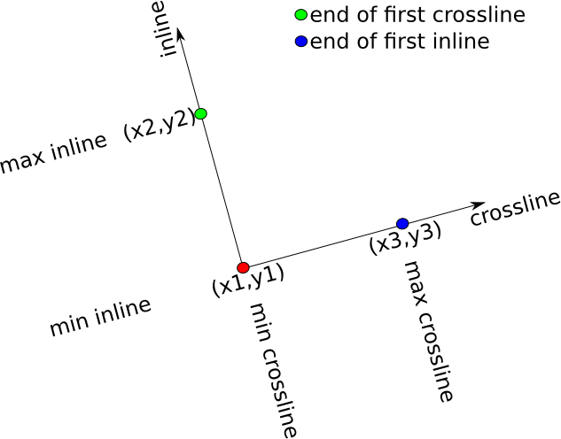

Manual
Obtaining TeaSeis.jl
Pkg.add("TeaSeis")Using TeaSeis.jl
Quick start guide
First, load the TeaSeis.jl library:
using TeaSeiswriting
- Create a new JavaSeis file with a 3D framework (128 samples per trace, 32 traces per frame, and 16 frames per volume):
io = jsopen("filename.js", "w", axis_lengths=[128, 32, 16])Note that by default, SAMPLE, TRACE, and FRAME will be the axes properties.
- Allocate traces and headers for a single frame:
trcs, hdrs = allocframe(io)- Populate
trcs, andhdrswith values. For example, write random values to all traces in the first frame:
map(i->set!(prop(io, stockprop[:TRC_TYPE]), hdrs, i, tracetype[:live]), 1:size(io,2))
map(i->set!(prop(io, stockprop[:TRACE] ), hdrs, i, i ), 1:size(io,2))
map(i->set!(prop(io, stockprop[:FRAME] ), hdrs, i, 1 ), 1:size(io,2))
rand!(trcs)
writeframe(io, trcs, hdrs)- Close the file
close(io)reading
- Open a new JavaSeis file from an existing dataset:
io = jsopen("filename.js", "r")- Read the first frame:
trcs, hdrs = readframe(io, 1)or a similar in-place version:
trcs, hdrs = allocframe(io)
readframe!(io, trcs, hdrs, 1)- Access values stored in a trace property for the first trace in the frame:
get(prop(io, stockprop[:TRACE]), hdrs, 1)or, slightly less efficient:
get(prop(io, stockprop[:TRACE]), hdrs[:,1])- Close the file
close(io)jsopen / jscreate
A JavaSeis dataset is created/opened with the jsopen method which returns a JSeis. A JavaSeis dataset must have a minimum of 3 dimensions.
Create a 3D JavaSeis file with 10 samples per trace, 11 traces per frame, and 12 frames per volume:
io = jsopen("file.js", "w", axis_lengths=[10,11,12])Open an existing JavaSeis file in read-only mode:
io = jsopen("file.js", "r")
io = jsopen("file.js") # equivalent to previous lineOpen an existing JavaSeis file for reading and writing:
io = jsopen("file.js", "r+")To close an open dataset:
close(io)To create a dataset:
jscreate("file.js", axis_lengths=[10,11,12])This is useful for when you need to create the data-set on the master process, and write to it on worker processes.
Available options when creating a new JavaSeis file
The jscreate and, when operating in write "w" mode, jsopen functions take the following named optional arguments:
similarto::String
An existing JavaSeis dataset. If set, then all other named arguments can be used to modify the data context that belongs to the existing JavaSeis dataset.
description::String
Description of dataset, if not set, then a description is parsed from the filename.
mapped::Bool
If the dataset is full (no missing frames/traces), then it may be more efficient to set this to false. Defaults to true.
nextents::Int
The number of file-extents used to store the data. If not set, then a heuristic is used to choose the number of extents.
secondaries::Array{String, 1}
An array of file-system locations used to store the file extents. If not set, then primary storage is used.
datatype::String
Examples are CMP, SHOT, etc. If not set, then UNKNOWN is used.
dataformat::Type
Choose from Float32, and Int16. If not set, then Float32 is used.
dataorder::String
(not supported)
axis_propdefs::Array{TracePropertyDef, 1}
Trace properties corresponding to JavaSeis axes. If not set, then SAMPLE, TRACE, FRAME, VOLUME and HYPRCUBE are used.
axis_units::Array{String, 1}
Units corresponding to JavaSeis axes. e.g. SECONDS, METERS, etc. If not set, then UNKNOWN is used.
axis_domains::Array{String, 1}
Domains corresponding to JavaSeis axes. e.g. SPACE, TIME, etc. If not set, then UNKNOWN is used.
axis_lstarts::Array{Int32, 1}
Logical origins for each axis. If not set, then 1 is used for the logical origin of each axis.
axis_lincs::Array{Int32, 1}
Logical increments for each axis. If not set, then 1 is used for the logical increments of each axis.
axis_pstarts::Array{Float64, 1}
Physical origins for each axis. If not set, then 0.0 is used for the physical origin of each axis.
axis_pincs::Array{Float64, 1}
Physical increments for each axis. If not set, then 1.0 is used for the physical increments of each axis.
properties::Array{TracePropertyDef, 1}
An array of custom trace properties. These are in addition to a minimal set of trace properties listed in the ProMax manual.
dataproperties::Array{DataProperty, 1}
An array of custom data properties. One property per data-set rather than one property per trace as in properties above.
geometry::Geometry
An optional three point geometry can be embedded in the JavaSeis file.
properties_add::Array{TracePropertyDef}
When similarto is specified, use this to add trace properties to those already existing in the similarto file.
properties_rm::Array{TracePropertyDef}
When similarto is specified, use this to remove trace properties to those already existing in the similarto file.
dataproperties_add::Array{DataProperty}
When similarto is specfied, use this to add dataset properties to those aloready existing in the similarto file.
dataproperties_rm::Array{DataProperty}
When similarto is specified, use this to remove dataset properties to those already existing in the similarto file.
For example:
io = jsopen("file.js", "w", axis_lengths=[10,11,12], dataformat=Float16, axis_pincs=[0.004,10.0,20.0])Read/write methods
JavaSeis is a frame based file format.
For io::JSeis, allocate memory for a single frame:
trcs, hdrs = allocframe(io) # allocate memory for traces and headers for a single frame
trcs = allocframetrcs(io) # allocate memory for traces for a single frame
hdrs = allocframehdrs(io) # allocate memory for headers for a single frameRead a frame. ifrm::Int, ivol::Int, ihyp::Int and i6::Int must be consistent with the JavaSeis data context.
trcs, hdrs = readframe(io, ifrm) # read from 3D data
trcs, hdrs = readframe(io, ifrm, ivol) # read from 4D data
trcs, hdrs = readframe(io, ifrm, ivol, ihyp) # read from 5D data
trcs, hdrs = readframe(io, ifrm, ivol, ihyp, i6) # read from 6D data
...Read a frame (in-place) using pre-allocated memory:
ifrm = 1
readframe!(io, trcs, hdrs, ifrm) # read from 3D data
readframe!(io, trcs, hdrs, ifrm, ivol) # read from 4D data
readframe!(io, trcs, hdrs, ifrm, ivol, ihyp) # read from 5D data
readframe!(io, trcs, hdrs, ifrm, ivol, ihyp, i6) # read from 6D data
...Note that readframe! methods returns the *fold** (number of live traces in the frame).
Similar methods exist for reading only headers:
ifrm = 1
hdrs = readframehdrs(io, ifrm) # read from 3D data
hdrs = readframehdrs(io, ifrm, ivol) # read from 4D data
hdrs = readframehdrs(io, ifrm, ivol, ihyp) # read from 5D data
hdrs = readframehdrs(io, ifrm, ivol, ihyp, i6) # read from 6D data
...
readframehdrs!(io, hdrs, ifrm) # in-place read from 3D data
readframehdrs!(io, hdrs, ifrm, ivol) # in-place read from 4D data
readframehdrs!(io, hdrs, ifrm, ivol, ihyp) # in-place read from 5D data
readframehdrs!(io, hdrs, ifrm, ivol, ihyp, i6) # in-place read from 6D data
...or only traces:
ifrm = 1
trcs = readframetrcs(io, ifrm) # read from 3D data
trcs = readframetrcs(io, ifrm, ivol) # read from 4D data
trcs = readframetrcs(io, ifrm, ivol, ihyp) # read from 5D data
trcs = readframetrcs(io, ifrm, ivol, ihyp, i6) # read from 6D data
...
readframetrcs!(io, trcs, ifrm) # in-place read from 3D data
readframetrcs!(io, trcs, ifrm, ivol) # in-place read from 4D data
readframetrcs!(io, trcs, ifrm, ivol, ihyp) # in-place read from 5D data
readframetrcs!(io, trcs, ifrm, ivol, ihyp, i6) # in-place read from 6D data
...Write a frame. The frame, volume, and hypercube indices are determined from the trace properties (hdrs::Array{UInt8,2})
writeframe(io, trcs, hdrs)To loop over all frames in a dataset of arbitrary dimension, TeaSeis.jl provides an iterator-type API:
for i=1:length(io)
trcs, hdrs = readframe(io, ind2sub(io,i)...)
endwhere length(io) is the number of frames in io, ind2sub converts the linear index i into n-tuple indexing dimensions 3 and higher. Of course, this can also be used with readframe!, readframetrcs, readframetrcs!, readframehdrs and readframehdrs!.
IMPORTANT NOTE:
It is very important to note that the JavaSeis format left-justifies all live traces in a frame. This makes reading and writing data more efficient. However, if you are reading or writing non-full frames, extra care must be taken. Two methods (leftjustify! and regularize!) are provided to help with this situation.
Writing a non-full frame:
leftjustify!(io, trcs, hdrs)
writeframe(io, trcs, hdrs)Reading a non-full frame:
readframe!(io, trcs, hdrs, 1)
regularize!(io, trcs, hdrs)
regularize!(io, trcs, hdrs, stockprop[:TRACE]) # used when the trace label does not correspond to a trace propertyPlease note that the regularize method sets the :TRC_TYPE property appropriately. That is, a padded trace is of tracetype[:dead].
Methods for finding the fold of a frame:
fold(io, hdrs) # get fold by examining the headers `hdrs` from a frame
fold(io, ifrm) # get fold from a 3D data set using the JavaSeis `TraceMap` file
fold(io, ifrm, ivol) # get fold from a 4D data set using the JavaSeis `TraceMap` file
fold(io, ifrm, ivol, ihyp) # get fold from a 5D data set using the JavaSeis `TraceMap` file
fold(io, ifrm, ivol, ihyp, i6) # get fold from a 6D data set using the JavaSeis `TraceMap` file
...Alternative read/write methods (N-Dimensional slices)
We supply convenience methods for reading and writing arbitrary patches of data. If frames are not full, then the read algorithms include automatic regularization of the frames, and the write algorithms include automatic left justification. In turn, this means that the convenience of the following methods may come at the expense of extra I/O operations. This is especially true for JavaSeis datasets that are of 6 or more dimensions.
Reading:
trcs, hdrs = read(io, 1:10, 2:3, 4) # read from 3D data (frame 4, traces 2-3, and time samples 1-10)
trcs, hdrs = read(io, 1:10, 2:3, 4, :) # read from 4D data (all volumes, frame 4, traces 2-3, and time samples 1-10)
trcs, hdrs = read(io, 1:10, 2:3, 4, :, 2:2:4) # read from 5D data (Hypercubes 2 and 4, all volumes, frame 4, traces 2-3 and time samples 1-10)
trcs, hdrs = read(io, 1:10, 2:3, 4, :, 2:2:4, 1) # read from 6D data (element 1 from the 6th dimension, hypercubes 2 and 4, all volumnes, frame 4, traces 2-3 and time samples 1-10)
...
read!(io, trcs, hdrs, 1:10, 2:3, 4) # in-place read from 3D data
read!(io, trcs, hdrs, 1:10, 2:3, 4, :) # in-place read from 4D data
read!(io, trcs, hdrs, 1:10, 2:3, 4, :, 2:2:4) # in-place read from 5D data
read!(io, trcs, hdrs, 1:10, 2:3, 4, :, 2:2:4, 1) # in-place read from 6D data
...Similar methods exist for reading only traces (for example):
trcs = readtrcs(io, 1:10, 2:3, 4)
readtrcs!(io, trcs, 1:10, 2:3, 4) # in-place version of previous lineand only headers (for example):
hdrs = readhdrs(io, :, 2:3, 4)
readhdrs!(io, hdrs, :, 2:3, 4) # in-place version of previous line//Note that when using readhdrs and readhdrs! the slice range for the first dimension is always :.
Writing:
write(io, trcs, hdrs) # trcs::Array{Float32,N}, hdrs::Array{Float32,N} where N is either 3,4 or 5.
write(io, trcs, hdrs, 1:10) # same as previous except only time samples 1:10 are written.In the above listing, the locations that are written to are determined by the header values.
Alternative write methods for full frames
it is sometimes not convenient to set headers before writing full frames. This might be true when, for example, one is doing research work where geometry (and other) information does not need to be stored in trace headers. For this scenario, we provide two sets of alternative API.
The first set of API is for writing one frame at a time:
writeframe(io, trcs, ifrm) # write to 3D data
writeframe(io, trcs, ifrm, ivol) # write to 4D data
writeframe(io, trcs, ifrm, ivol, ihyp) # write to 5D data
writeframe(io, trcs, ifrm, ivol, ihyp, i6) # write to 6D data
...The second set of API is for writing arbitrary N-dimensional slices of data:
write(io, trcs, :, 1:10, 3:2:5) # write to 3D data, all samples; traces 1-10; frames 3, 5
write(io, trcs, :, 1:10, 3:2:5, 6) # write to 4D data, all samples; traces 1-10; frames 3, 5; volume 6
write(io, trcs, :, 1:10, 3:2:5, 6, :) # write to 5D data, all samples; traces 1-10; frames 3, 5; volume 6, all hypercubes
write(io, trcs, :, 1:10, 3:2:5, 6, :, 1:2) # write to 6D data, all samples; traces 1-10; frames 3, 5; volume 6, all hypercubes, elements 1 and 2 from dimension 6
...Please note that in these forms, the writeframe and write methods will create headers for you, and populate the :TRC_TYPE property along with the properties corresponding to the trace and frame axes of your data. In the case of 4D data, the volume property is also populated, and in the case of 5D data, the volume and hypercube properties are also populated.
In addition, please note that in the write method, trcs must have the same number of dimensions as io. In practice this can be accomplished using reshape. For example if size(io)=(10,20,3) and size(trcs)=(10,), then to write trcs to the first trace of the first frame of io one could write:
write(io, rehsape(trcs, 10, 1, 1), :, 1, 1)Trace Properties
The JavaSeis data format does not specify any trace properties. However, there are commonly used (stock) properties (listed in STOCKPROPS.md, as well as a minimal set of properties that are expected by SeisSpace (listed in SSPROPS.md). It is unusual when a stock property does not suit your needs. But, if need be, you can define a custom property using the TracePropertyDef constructor:
pdef = TracePropertyDef("label", "description", Float32)
pdef = TracePropertyDef("label", "description", Vector{Float32}, 2)The arguments to TracePropertyDef are the label, description, type, and, optionally, the number of elements stored in the property. The stock properties are defined in src/stockprops.jl using a Julia dictionary: stockprop. For example, access a stock definition for the TRACE property:
pdef = stockprop[:TRACE]Given a JavaSeis file io::JSeis and a stock definition, we can access the corresponding property of a JavaSeis file:
p = prop(io, pdef) # access using a `TracePropertyDef`
p = prop(io, "TRACE") # alternatively, access using the trace property definition label
p = prop(io, "TRACE", Int32) # type-stable version of previous lineGiven, additionally, a frame of headers hdrs::Array{UInt8,2}, we can get and set the values stored in a property:
@show get(p, hdrs[:,1])
@show get(p, hdrs, 1) # equivalent to the previous line of code
set!(p, hdrs, 1, 5) # set the first header in `hdrs` to 5
writeframe(io, trcs, hdrs) # the JavaSeis file does not know about the updated header until you call `writeframe`In the above code listing trcs is of type Array{Float32,2}.
TRC_TYPE
The TRC_TYPE property is used to indicate if a trace is dead, live or auxiliary within any given frame. It is stored as an Int32. We provide a second dictionary to map between the Int32 and human readable code:
tracetype[:live]
tracetype[:dead]
tracetype[:aux]For example,
io = jsopen("file.js", "r")
trcs, hdrs = readframe(io, 1)
prop_trctype = prop(io, stockprop[:TRC_TYPE])
for i=1:size(hdrs,2)
if get(prop_trctype, hdrs, i) == tracetype[:live]
write(STDOUT, "trace $(i) is a live trace\n")
elseif get(prop_trctype, hdrs, i) == tracetype[:dead]
write(STDOUT, "trace $(i) is a dead trace\n")
elseif get(prop_trctype, hdrs, i) == tracetype[:aux]
write(STDOUT, "trace $(i) is a aux trace\n"
end
end
close(io)Data properties
TeaSeis.jl provides support for storing custum data properties. This is accomplished by passing an array of DataProperty's to the jsopen function. For example, a data property could be defined as:
p = DataProperty("Survey date", Int32, 120977")Secondaries
If you choose to use secondary storage, then it is recommended to set the JAVASEIS_DATA_HOME environment variable. This is used to determine the file-path for the secondary storage. For example if,
ENV["JAVASEIS_DATA_HOME"] = "/home/joe/projects"
cd("/home/joe/projects/some/dir/here")
io = jsopen("data.js", "w", axis_lengths=[10,11,12], secondaries=["/bigdisk/joe"])
close(io)Then the secondary location is determined by replacing /home/joe/projects in /home/joe/projects/some/dir/here/data.js with /bigdisk/joe resulting in /bigdisk/joe/some/dir/here/data.js being the secondary storage for this example.
Geometry
TeaSeis.jl provides support for storing survey geometry using three-points to define rotated/translated coordinate system.
geom = Geometry(u1=1,un=2,v1=1,vn=2,w1=1,wn=2,ux=1.0,uy=0.0,uz=0.0,vx=0.0,vy=1.0,vz=0.0,wx=0.0,wy=0.0,wz=1.0)where (ox,oy,oz) is the origin, (ux,uy,uz) is a vector to define the end of the u-axis (e.g. cross-line axis), (vx,vy,vz) is the end of the v-axis (e.g. the in-line axis), and (wx,wy,wz) is the end of the w-axis (e.g. the depth axis). (u1,un) are the first and last bin indices along the u-axis, (v1,vn) are the first and last bin indices along the v-axis, and (w1,wn) are the first and last bin indices along the w-axis. TeaSeis.jl does not provide any tools for using this geometry to manipulate trace coordinates. I would recommend that this functionality be put into a separate package.

Convenience methods and dictionaries
For convenience and consistency, we supply several dictionaries. In addition to the dictionary for trace property definitions and trace type (both described above), there are dictionaries for data domain stockdomain, units stockunit, and data type stockdatatype. All of these are listed in STOCKPROPS.md.
Example usage within the jsopen method:
io = jsopen("file.js", "w", axis_lengths=[12,11,10], axis_units=[stockunit[:SECONDS], stockunit[:METERS], stockunit[:METERS]], axis_domains=[stockdomain[:TIME], stockdomain[:SPACE], stockdomain[:SPACE], datatype=stockdatatype[:SOURCE])Several convenience methods are supplied for querying io::JSeis:
ndims(io) # returns `Int`, number of dimensions in the JavaSeis dataset
length(io) # returns `Int`, the number of frames in the JavaSeis dataset, equivalent to `prod(size(io)[3:end])`
size(io) # returns `NTuple{Int}`, size of JavaSeis dataset
size(io,i) # returns `Int`, size of JavaSeis dataset along dimension `i::Int`
props(io) # returns `NTuple{TraceProperty}`, trace property along all dimensions
props(io,i) # returns `TraceProperty`, trace property along dimension `i::Int`
propdefs(io) # returns `NTuple{TracePropertyDef}`, trace property definition along all dimensions
propdefs(io,i) # returns `TracePropertyDef`, trace property along dimension `i::Int`
labels(io) # returns `NTuple{String}`, trace property labels along all dimensions
labels(io,i) # returns `String`, trace property label along dimension `i::Int`
units(io) # returns `NTuple{String}`, units along all dimensions
units(io,i) # returns `String, unit along dimension `i::Int`
domains(io) # returns `NTuple{String}`, data domains along all dimensions
domains(io,i) # returns `String`, data domain along dimension `i::Int`
pstarts(io) # returns `NTuple{Float64}`, physical starts along all dimensions
pstarts(io,i) # returns `Float64`, physical start along dimension `i::Int`
pincs(io) # returns `NTuple{Float64}`, physical increments along all dimensions
pincs(io,i) # returns `Float64`, physical increment along dimension `i::Int`
lstarts(io) # returns `NTuple{Int32}`, logical starts along all dimensions
lstarts(io,i) # returns `Int32`, logical start along dimension `i::Int`
lincs(io) # returns `NTuple{Int32}`, logical increments along all dimensions
lincs(io,i) # returns `Int32`, logical increment along dimension `i::Int`
lrange(io) # returns `NTuple{StepRange{Int64}}`, logical range along all dimensions
lrange(io,i) # returns `StepRange{Int64}`, logical range along dimension `i::Int`
isempty(io) # returns true if the dataset is empty (without trace or header extents)
in(prop,io) # returns true if the trace property `prop` exists in `io` -- `prop` can be of types `::TraceProperty`, `::TracePropertyDef`, or `::String`
dataproperty(io,nm) # returns the value held in the data property: `nm::String`
hasdataproperty(io,nm) # returns true if the data property corresponding to label `nm::String` is in `io::JSeis`
geometry(io) # returns `Geometry`, the stored geometry of the dataset. If no geometry is stored, `nothing` is returnedConvenience methods are supplied for manipulating io::JSeis:
rm(io) # remove (delete) the file and all of its extent files and secondary folders
empty!(io) # remove extends and secondary folders, but keep meta-data
cp(src, dst) # create a new JavaSeis file `dst::AbstractString` that is a copy of `src::JSeis`, optional named argument: `secondaries=` - change file extents location
mv(src, dst) # move a JavaSeis file to `dst::AbstractString` from `src::JSeis`, optional named argument: `secondaries=` - change file extents location
copy!(io, hdrs, io1, hdrs1) # copy values from `hdrs1::Array{UInt8,2}` to `hdrs::Array{UInt8,2}`